Mixed fruit salad
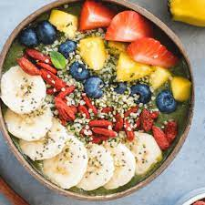With the right quantity and type of fruits, a fruit salad is ready for you,it will provide you with a power-packed dose of fibre, vitamins and antioxidants.
Pancake set
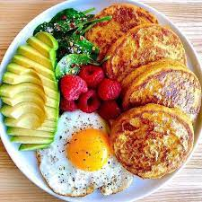A pancake is a thin, flat, circular piece of cooked batter made from milk,wheat flour, and eggs.We provied some fruits and a egg with pancake
Rava dosa
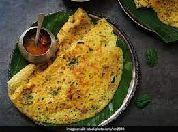Rava dosa is a thin crisp fried crepe made with semolina, rice flour, spices and ghee
Paneer rice
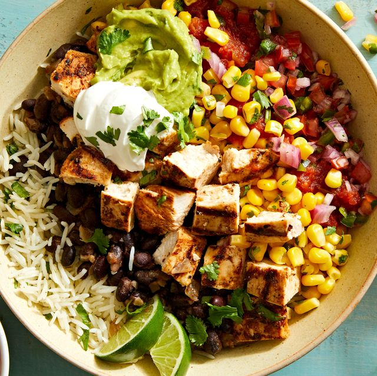Potassium in paneer helps to reduce the effect of high sodium, by lowering blood pressure and contraction of blood vessels, resulting in improved heart health and reduced risk of heart attack.
Meals
Meals we include several different types of food, such as grains, vegetables, fruit, and in some cases, meat. Meals have different names by time they are taken or by the type of food that is eaten.
Carrot rice
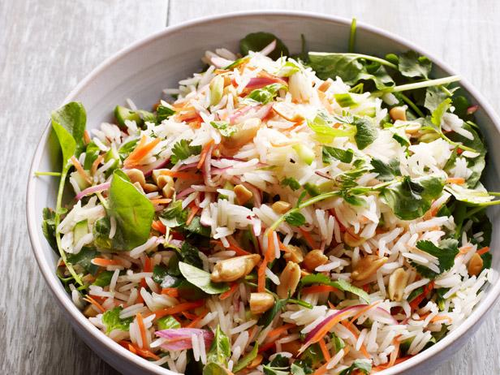Carrot rice is fancy, but super delicious and healthy too! By fluffing up the white rice with carrots, you are decreasing the glycemic load of the meal!
Fruits
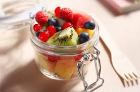In this we provid some combination fo fruits to enjoy your evening.Fruits are healthy and it will helps you to lose weigth
Laddu
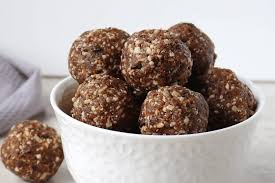This should be on your platter a laddu with no sugar and a lot of protiens.It known for their aromatic taste, but are also highly preferred for their unique health benefits
Nuts
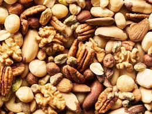Nuts are seeds with hard shells that are reproductive units for a variety of trees. Nuts are processed in the shell, or are shelled and sold whole, sliced, slivered and chopped.
Dosa
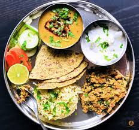We provid dosa with some other variety rice and some side dish.Dosa is high in carbohydrates and contains no added sugars or saturated fats. As its key ingredients are rice and black gram, it is a good source of protein.
Rava idli
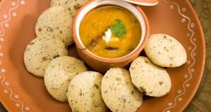Rava idli is packed with essential minerals like Vitamin B, calcium, dietary fiber, phosphorus, zinc, and magnesium, rawa helps to boost bone health, promote digestion and weight-loss.
Naan
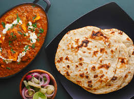Paneer naan is a traditional Indian flatbread and a version of naan. The dough is made with a combination of flour, yeast, sugar, salt, and yogurt.Paneer Butter Masala, also known as butter paneer is a rich & creamy curry made with paneer, spices, onions, tomatoes, cashews and butter.